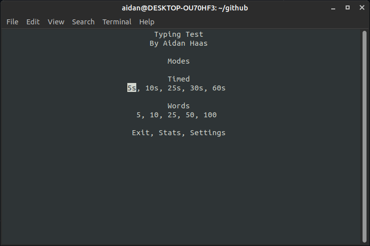

Aidan Haas
About Me
I'm a Computer Science student studying at the University of Maryland, College Park
I've always had a passion for coding, and now I'm looking to make it my career!
I have experience in MIPS Assembly, C, C#, C++, Java, Python, SQL, XAML, HTML, CSS, and their
respective IDEs.
My Projects
Typing-Test-C (2022)
I wrote this program in C with the goals of clean code, good memory management, and learning C.
Typing-Test-C is a terminal based program which uses the ncurses library.
The program works by providing the user with a prompt of words, which they type as fast as they can.
Once completed, it prints the user's performance to the screen and saves the results locally, which
can be viewed in the Stats page.
Typing-Teacher (2021)
A program designed to improve user typing speed an accuracy. Written in Java using the AWT library for graphics.
Object was demonstrating Java skills, learning AWT, and creating an intuitive user-interface. This
was written over my 2021 winter break.
The program keeps track of each key and shows the user which keys take them the longest to press and
which they mis-type the most.